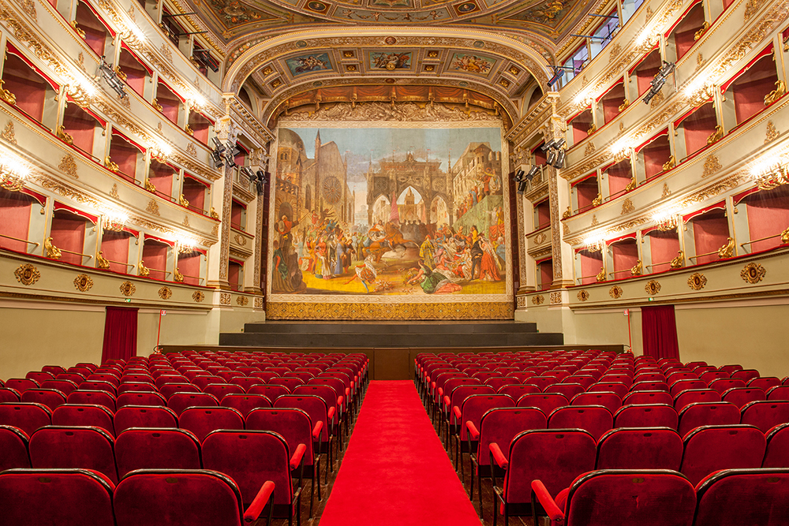
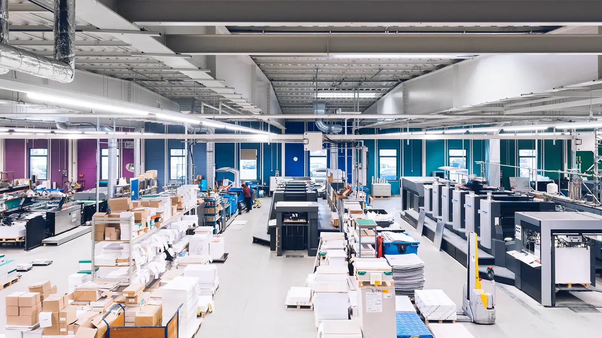
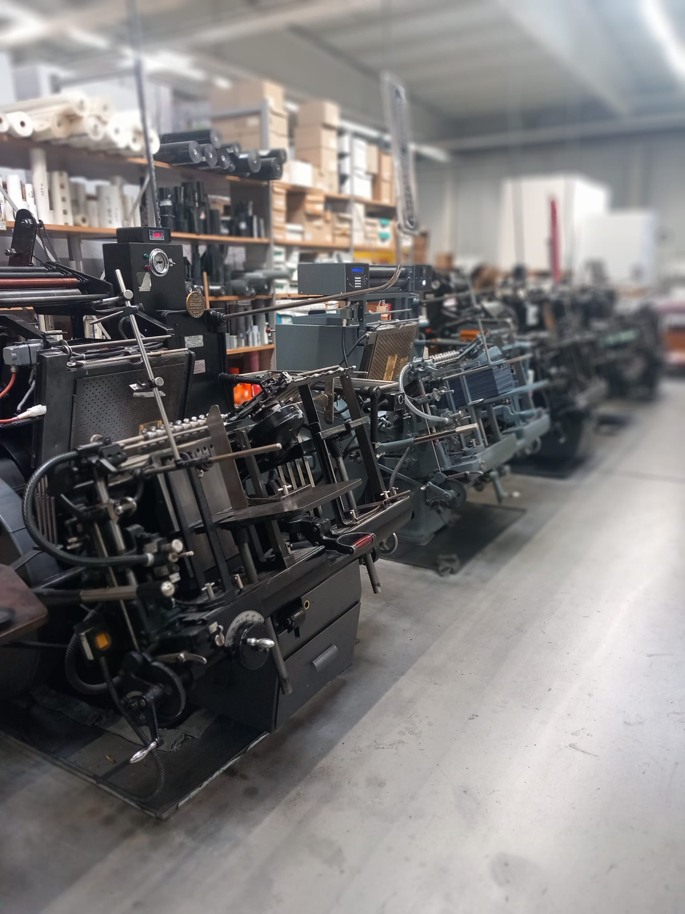
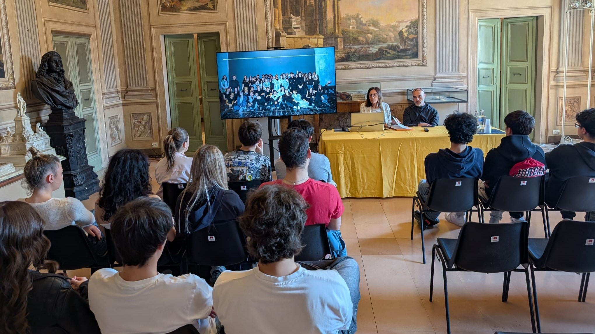

Formazione Scuola Lavoro FSL (ex PCTO)
Il mio percorso PCTO si è sviluppato in due esperienze distinte: la prima presso il Teatro Pergolesi di Jesi, nell'ambito del progetto "Banco di Scena", dove ho scoperto il mondo dell'illuminazione teatrale; la seconda a Berlino, presso l'azienda X-Press Graphics & Print GmbH, dove ho avuto il mio primo contatto concreto con un ambiente lavorativo internazionale.
Il Teatro Pergolesi di Jesi – Progetto "Banco di Scena"
Il mio percorso PCTO è iniziato presso il Teatro Pergolesi di Jesi, grazie al progetto "Banco di Scena", promosso dalla Fondazione Pergolesi Spontini. Si tratta di un'iniziativa rivolta agli studenti delle scuole superiori, che offre l'opportunità di conoscere da vicino alcune delle professioni legate allo spettacolo dal vivo: lo scenografo, il costumista, il light designer e il social media reporter.
Il progetto rappresenta un esempio concreto di PCTO pensato per creare un ponte tra il mondo della scuola e quello del lavoro, attraverso un modello educativo che valorizza la creatività, l'integrazione e l'inclusione.

Nel corso dell'esperienza sono stati attivati quattro laboratori: Scenografia, Sartoria teatrale, Illuminotecnica, Comunicazione e multimedia. Ho preso parte al laboratorio di illuminotecnica, entrando a far parte del team responsabile della progettazione, gestione e regolazione delle luci e degli effetti speciali utilizzati durante gli spettacoli teatrali.
Durante il laboratorio ho appreso le basi teoriche e pratiche dell'illuminazione scenica: dalla natura fisica della luce come energia elettromagnetica, al suo utilizzo espressivo a teatro per evocare emozioni, atmosfere e ambienti. Ho conosciuto i principali macchinari utilizzati in ambito teatrale, tra cui il PC500, il sagomatore, il cambia colore e il proiettore Spotlight. Ho anche approfondito il legame tra colori ed emozioni e il funzionamento dei colori primari nella creazione di effetti luminosi scenici. È stata un'esperienza formativa che mi ha permesso di lavorare concretamente sul campo, collaborare con professionisti del settore e sviluppare competenze sia tecniche che relazionali.
L'azienda: X-Press Graphics & Print GmbH

X-Press Graphics & Print GmbH è un'azienda con sede a Berlino che opera nel settore della stampa e della distribuzione di materiale editoriale e pubblicitario. Si occupa della gestione, organizzazione e spedizione di riviste, giornali e opuscoli promozionali, svolgendo un ruolo importante nel processo di diffusione delle informazioni e della pubblicità sul territorio tedesco. L'azienda si distingue per un ambiente di lavoro positivo e accogliente, caratterizzato da un clima familiare basato sul rispetto reciproco e sulla collaborazione tra colleghi. Nonostante le attività possano sembrare di natura puramente pratica e operativa, l'organizzazione richiede ai propri lavoratori un alto livello di attenzione, precisione e senso di responsabilità.
6.3 Il mio ruolo: Junior Developer (in formazione)
All'interno dell'azienda ho lavorato nel reparto operativo, occupandomi della preparazione del materiale editoriale e pubblicitario destinato alla distribuzione, e affiancando i tecnici nelle fasi legate alla stampa e alla finitura dei prodotti. Un'esperienza che mi ha permesso di osservare dall'interno l'intero ciclo produttivo di un'azienda del settore.
6.4 Mansioni principali
Gestione e preparazione del materiale per la distribuzione: Ho lavorato all'interno del reparto operativo occupandomi della preparazione e dell'organizzazione di riviste, giornali e materiale pubblicitario destinato alla spedizione. Questa attività, che a prima vista potrebbe sembrare puramente manuale, mi ha insegnato quanto rigore, precisione e attenzione siano fondamentali anche nelle fasi apparentemente più semplici di un processo produttivo.
Lavoro con i macchinari di stampa: Una delle parti più interessanti dell'esperienza è stata la possibilità di affiancare i tecnici nell'utilizzo dei macchinari dedicati alla stampa. Ho potuto osservare e partecipare concretamente al processo che trasforma un progetto grafico digitale in un prodotto fisico reale: vedere come un file elaborato al computer diventi una rivista stampata, rifinita e pronta per essere distribuita è stato qualcosa che mi ha colpito molto. È stato il momento in cui ho capito davvero quanto lavoro, tecnologia e competenza si nascondano dietro ogni singolo prodotto stampato che teniamo tra le mani.

Dal digitale al tangibile: Questa esperienza mi ha dato una prospettiva nuova sul ciclo di vita di un prodotto editoriale: dalla progettazione grafica fino alla stampa, alla finitura e alla distribuzione finale. Ho compreso come ogni fase sia strettamente collegata alle altre e come anche un piccolo errore in una di esse possa influenzare l'intero risultato.
6.5 Approccio al lavoro
Affrontare un'esperienza lavorativa all'estero, in una lingua diversa e in un contesto del tutto nuovo, è stato un salto importante sia sul piano professionale che personale. All'inizio ho dovuto adattarmi a ritmi, metodi e dinamiche che non conoscevo. Ho imparato che anche un lavoro apparentemente semplice e ripetitivo richiede in realtà molta concentrazione, costanza e senso di responsabilità. I colleghi si sono dimostrati gentili e disponibili, sempre pronti ad aiutare in caso di difficoltà, e questo ha reso l'ambientamento molto più sereno. Con il passare dei giorni mi sono sentita parte del gruppo e ho acquisito maggiore sicurezza nel gestire le mie mansioni in autonomia.
6.6 Hard skills acquisite
- Conoscenza del ciclo produttivo della stampa e della distribuzione editoriale
- Capacità di gestione e organizzazione del materiale in un reparto operativo
- Familiarità con i macchinari e le tecnologie utilizzate nel settore della stampa
- Comprensione del processo che trasforma un progetto digitale in un prodotto fisico
- Adattamento a un contesto lavorativo internazionale
6.7 Soft skills acquisite
- Precisione e attenzione ai dettagli in attività operative
- Capacità di lavorare in team in un ambiente multiculturale
- Adattabilità a un contesto lavorativo straniero
- Gestione dello stress e delle attività ripetitive con costanza e professionalità
6.8 Riflessione personale
Se dovessi sintetizzare in una sola cosa ciò che queste esperienze mi hanno lasciato, direi che mi hanno cambiato il modo di guardare il lavoro. Prima del FSL lo vedevo come qualcosa di distante, quasi astratto. Dopo averlo vissuto dall'interno, in contesti così diversi e in un paese straniero, ho capito che il mondo del lavoro non è una destinazione lontana, ma qualcosa a cui ci si prepara ogni giorno, anche tra i banchi di scuola. Ne ho tratto competenze, certo, ma soprattutto una consapevolezza nuova: so un po' meglio chi sono, cosa mi piace e in che direzione voglio andare.
